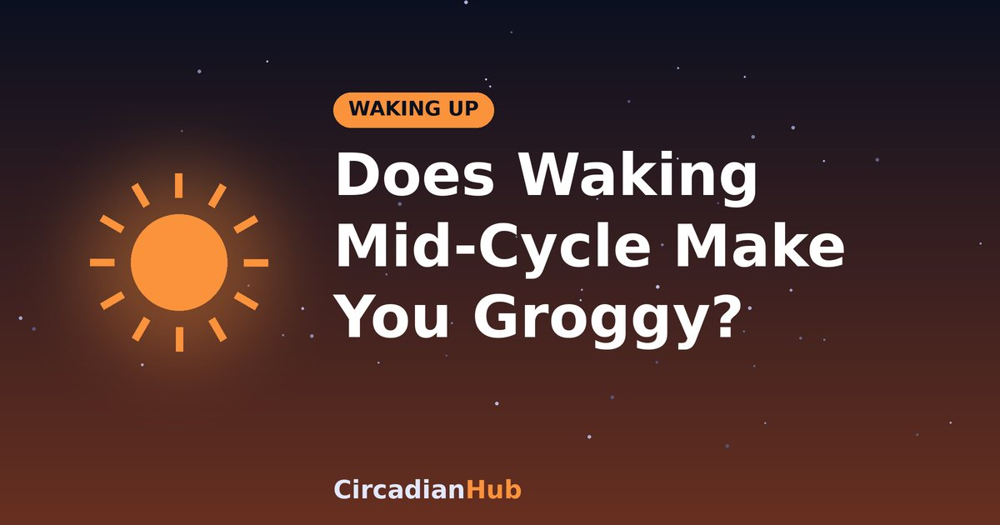

Does Waking Up Mid-Cycle Really Make You Groggy? What the Evidence Says

A popular idea says that if your alarm goes off in the middle of a sleep cycle you will feel terrible, and that if you wake at the end of a cycle you will bound out of bed. There is some truth in this, but it is often overstated. This article looks at what sleep inertia is, what the research suggests about waking at different stages, and how to use cycle timing without expecting miracles.
A quick refresher on sleep cycles
Through the night, you move through repeating cycles that last about 90 minutes on average. Each cycle includes light sleep, deep sleep and REM sleep. Deep sleep is concentrated early in the night, and REM becomes longer towards morning. Cycle lengths vary from person to person and from night to night, commonly ranging from around 70 to 110 minutes. For more on the stages see how 90-minute sleep cycles work.
What is sleep inertia?
Sleep inertia is the groggy, disoriented state that follows waking. Thinking is slower, reaction times are worse and you may feel a strong pull to go back to sleep. It is usually strongest in the first few minutes and typically fades within 15 to 30 minutes, although it can last longer if you are seriously sleep-deprived. It happens because different parts of the brain wake up at different speeds, with areas involved in alertness and decision-making taking longer to return to full function.
What the evidence says about waking stage
Research on sleep inertia generally finds that being woken from deep sleep, especially early in the night, produces stronger grogginess than being woken from light sleep or REM. This is the basis for the advice to wake at the end of a cycle. However, the story is more complicated than the popular version.
- Most of the effect comes from deep sleep. Since deep sleep is concentrated in the first half of the night, mid-cycle waking after only a few hours of sleep is likely to cause the most grogginess.
- Later in the night, cycles contain less deep sleep. So the cycle boundary matters less in the last few hours before your normal wake time.
- Sleep loss makes inertia worse. A person who is short of sleep will feel groggy whichever stage they wake from.
- Individual differences are large. Some people snap awake easily, and others take a long time.
Total sleep matters more
If you must choose between an extra hour of sleep and perfect cycle timing, choose sleep. Waking on a cycle boundary after five hours is still five hours of sleep, and the sleep loss will affect your mood, concentration and health. Cycle timing is a fine-tuning tool for people who are already getting enough sleep. See how much sleep you need for the ranges by age.
Why calculators use 90 minutes
Since the average cycle is about 90 minutes, counting back from your wake time in 90-minute steps gives times likely to land close to the end of a cycle. The CircadianHub uses this rule, adds a period for falling asleep, and offers several options. It is an estimate, not a measurement of your own brain.
Worked example
| Wake-up time | Cycles | Sleep | Bedtime (with 15 minutes to fall asleep) |
|---|---|---|---|
| 6:30 | 5 | 7.5 h | 22:45 |
| 6:30 | 6 | 9 h | 21:15 |
| 7:00 | 5 | 7.5 h | 23:15 |
| 7:00 | 4 | 6 h | 00:45 |
If you wake at 6:30 and feel groggy after 7.5 hours, you could try shifting bedtime by 15 to 30 minutes either way for a few days, since your own cycles may differ from the average.
Can wearables wake you at the right time?
Some alarms and smartwatches claim to wake you in light sleep within a window before your alarm. They estimate your sleep stage from movement and heart rate, which is not as accurate as brain recordings in a sleep lab. They may still give some benefit, but do not expect precision. Treat them as an optional extra, and remember that they cannot make up for insufficient sleep.
How to test it for yourself
- Pick a fixed wake time and keep it for two weeks.
- For the first week, sleep for 7.5 hours (five cycles plus a bit).
- For the second week, shift the bedtime by 30 minutes earlier or later.
- Each morning, rate your grogginess from 1 to 5 and note when it fades.
- Keep the timing that works best.
Other things that affect how you wake
- Light: bright light soon after waking speeds alertness. See cortisol, light and morning sunlight.
- Temperature: a cool room supports deeper sleep, but a very cold room can make it hard to get up.
- Alarm sound: a harsh alarm may make waking feel more stressful.
- Alcohol and caffeine: both can disturb sleep and worsen how you feel in the morning.
When grogginess is a warning sign
If you are groggy for hours, feel exhausted after long sleeps, or have very strong sleepiness during the day, cycle timing will not fix it. Possible causes include sleep apnoea, a sleep disorder, depression or another medical condition. See how to wake up feeling refreshed and talk to a doctor if it persists.
What waking feels like from each stage
| Stage you wake from | Typical experience |
|---|---|
| Light sleep (N1, N2) | Usually the easiest; you feel alert fairly quickly |
| Deep sleep (N3) | The hardest; strong grogginess, confusion and slow thinking |
| REM sleep | Often you remember a dream and wake reasonably alert, though some people feel foggy |
Sleep debt changes the picture
When you have been short of sleep, your brain tries to catch up by producing extra deep sleep, and it can be harder to wake from. That is why the first alarm after a run of short nights feels so brutal, and why a person who sleeps enough tends to have milder inertia. Paying back sleep debt is often a better fix than perfecting cycle timing.
Your first 15 minutes after waking
- Turn off the alarm and get out of bed straight away.
- Open the curtains or switch on a bright light.
- Drink a glass of water.
- Move for a few minutes: stretch, walk or climb stairs.
- Delay important decisions until the fog has cleared.
Who is most affected?
- Teenagers: a later body clock and early school times mean many are woken from deep sleep and feel very groggy.
- Shift workers: waking at odd hours can mean waking at the body clock's night-time low. See our night shift guide.
- People who nap: waking from a 30 to 60 minute nap often means waking from deep sleep. A 20-minute or a 90-minute nap avoids this. See our nap guide.
Myths about waking mid-cycle
"It ruins your whole day"
Grogginess usually fades within half an hour. It may be unpleasant, but it does not spoil the rest of the day.
"You must always wake exactly at a cycle end"
Your cycles vary, and you have no way of knowing exactly where you are. A close approximation is enough.
"More cycles is always better"
More sleep helps if you are short of it, but beyond your needs it will not improve how you feel.
Frequently asked questions
Does waking mid-cycle harm my health?
No. It may cause temporary grogginess, but it is not dangerous by itself.
Is a 90-minute cycle exact?
No. It is an average, and yours may be shorter or longer.
Should I use the snooze button to finish the cycle?
Snoozing gives light, fragmented sleep and is unlikely to help. Setting the alarm for the time you need is better.
What if I have to wake at a fixed time?
Choose the bedtime that gives enough sleep and keeps you close to a cycle boundary, but do not sacrifice hours for exact timing.
Summary
- Waking from deep sleep causes the most grogginess, but the effect is less strong later in the night.
- Total sleep matters more than exact cycle timing.
- Cycles vary, so treat 90 minutes as a guide and adjust by 15 to 30 minutes.
- Morning light and consistent timing help you wake.
- See a doctor if grogginess is severe or long-lasting.
See when to wake after a given bedtime with our Wake-Up Time Calculator.
Sources and further reading
Last updated: 1 October 2026. Links are general background reading from public-health organisations. How we write and update our guides.
Medical disclaimer: This article is for general information only and is not medical advice. If you have persistent sleep problems or excessive daytime sleepiness, speak with a doctor or sleep specialist.